GCHP 14.7.0 vs AtmosTransport, process by process
In short.
- Null run (nothing on): exposed a bug in GCHP 14.7.0. With transport off it does not conserve tracer mass (an
inverted condition in
AirQnt). With the one-character fix the models agree to 1e-4. - Full PBL mixing: perfect agreement (lowest-layer fraction identical to 5 digits, cell RMS 5e-5).
- Non-local PBL (GCHP's default): close agreement after four AtmosTransport changes. A +0.3 % offset remains early in the day, fading to +0.08 % at 24 h. Inputs and their timing are ruled out, so it lies in the implementation of the scheme; investigation ongoing.
- PBL + convection: GCHP uses the Grell–Freitas convective transport for GEOS-IT; AtmosTransport had ported the RAS form. With the Grell–Freitas form and convection every 240 s, as GCHP does it, the agreement equals the PBL-only case.
The experiment and why we do it
- Question: given identical meteorology, grid and initial tracer, do AtmosTransport and GCHP move a surface tracer the same way? We switch on one process at a time, so each difference can be traced to its cause before processes are combined.
- Initial condition and period: a CO2 tracer of 1 mol/mol (dry) in the lowest model layer and 0 above, everywhere, at 2021-12-01 00 UTC; 24 hours, output every hour.
- Common setup: GEOS-IT met (GCHP regrids C180 to C90 itself; AtmosTransport reads a C90 binary preprocessed from the same files), all 72 levels, 240 s steps in both models. Chemistry, emissions and deposition are off.
- Measures (lowest model layer):
- the global fraction of tracer still in the lowest layer, as AtmosTransport relative to GCHP; zero means the same net vertical mixing;
- the cell-by-cell RMS difference of the CO2 mixing ratio; it shows local differences that the global number can hide.
- Agreement looks like a fraction offset near 0 and a cell RMS at the level of the null run (~1e-4).
All comparisons
| # | Processes on | GCHP | AtmosTransport | Question | Result |
|---|---|---|---|---|---|
| 1 | none (null) | 14.7.0, then with the AirQnt fix | nothing on | Does anything change when nothing moves the tracer? | Matches with the fix (RMS 1.2e-4). 14.7.0 has a mass-conservation bug with transport off |
| 2 | full PBL mixing (TURBDAY) | use_non_local_pbl: false | new kind geoschem_full_pbl_mixing | Same PBL height, layer heights, air mass? | Perfect (fraction 0.000 %, RMS 5e-5) |
| 3 | non-local PBL (VDIFF) | default scheme | four changes (details) | Does the default PBL scheme agree? | Close: +0.32 % at 1 h, +0.20 % at 12 h, +0.08 % at 24 h; RMS 0.006 → 0.001 |
| 4 | non-local PBL + convection | convection on (Grell–Freitas for GEOS-IT) | RAS or Grell–Freitas form; convection hourly or every 240 s | Does convection agree? | Matches with the Grell–Freitas form, convection every 240 s (RMS equal to #3); extra offset +0.1–0.2 % |
Earlier diagnostic runs, not shown here:
- GCHP's met fields every 20 min, to see when GCHP updates temperature, winds and convective mass fluxes;
- a convection-only run. It isolated the scheme difference but is not a realistic setup, because convection rarely reaches the surface.
1. Null run: a mass-conservation bug in GCHP 14.7.0
- Why: with every process off, nothing should change. Any difference shows how each model's bookkeeping handles the air mass changing from hour to hour, which the meteorology does even with transport off.
- Finding: GCHP held the mixing ratio fixed (exactly 1.0000 everywhere), so tracer mass rose and fell with the air (±0.7 % per cell over the day). AtmosTransport held the tracer mass fixed.
- Cause: GCHP is meant to conserve species mass here. With transport off,
gchp_chunk_mod.F90setsscaleMR = .TRUE.so thatAirQntrescales the mixing ratio byDELP_DRY_prev / DELP_DRY. But incalc_met_mod.F90the rescale is guarded byABS(SUM(DP_DRY_PREV) − SUM(DELP_DRY)) < 1d-14, so it only runs when nothing changed. The commit that introduced it says "only update mixing ratio if delta pressure changed", so the comparison should be>. - Confirmed:
- repeat runs are bit-identical;
DELP_DRYchanges every hour;- with
>, GCHP conserves tracer mass per cell to 2e-7 and matches AtmosTransport to RMS 1.2e-4 (the small initial air-mass difference); - a run with advection on is byte-identical with and without the fix.
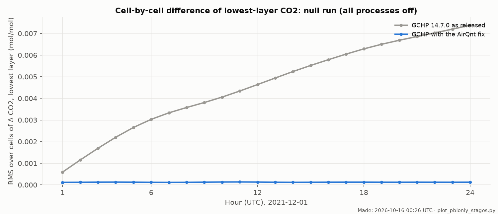
2. Full PBL mixing (GEOS-Chem TURBDAY)
- Why: GEOS-Chem's simpler PBL option makes everything below the PBL top uniform at every step (dry-air weighted, with the top layer mixed in proportion to the part below the PBL top). It uses only the PBL height, the layer heights and the air mass, with no stability closure. If the two models agree here, those inputs are consistent, and any difference in the non-local scheme must come from the scheme itself.
- AtmosTransport: new diffusion kind
geoschem_full_pbl_mixing, a port of GEOS-Chem'sCompute_Pbl_HeightandTurbDay. Box heights are hypsometric with virtual temperature, as in GEOS-Chem'sAirQnt. Applied every 240 s, as GCHP does. This matters: when the PBL top falls inside a layer, every call mixes that layer a little further. - GCHP:
use_non_local_pbl: false.
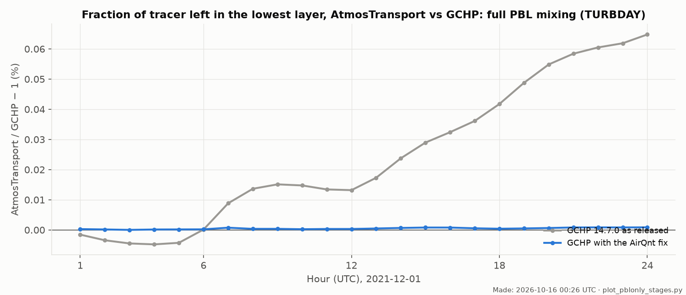
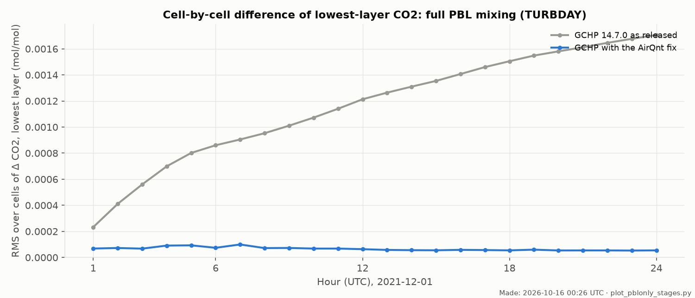
3. Non-local PBL (GEOS-Chem VDIFF, GCHP's default)
- Why: this is the scheme GCHP normally uses.
The step-by-step page describes the four AtmosTransport changes that
were needed:
- GEOS-Chem's dry air per layer;
- the matching column geometry inside the scheme;
- a 240 s step;
- the scheme's temperature interpolated in time.
- Result with the fixed GCHP: the fraction offset is +0.32 % at 1 h, +0.20 % at 12 h and +0.08 % at 24 h. The cell RMS falls from 0.006 to 0.001. The fix removed the late-day part of the earlier offset.
- What remains: full mixing (section 2) agrees perfectly, so the PBL height, layer geometry and air mass are ruled out. The early offset comes from inside the non-local calculation.
- Temperature timing ruled out: AtmosTransport normally updates the scheme's temperature once per hour, and GCHP every 240 s. An experiment that updated AtmosTransport's temperature every 240 s (linear in time, as GCHP) moved the offset by only ±0.03 percentage points (1 h: +0.32 → +0.33 %; 12 h: +0.20 → +0.17 %; 24 h: +0.08 → +0.10 %). A control run that refreshed every step with the temperature held fixed was bit-identical to the default, which confirms the experiment's code path.
- Next: a single-column comparison of AtmosTransport's port with GEOS-Chem's
vdiff_mod.F90(Richardson-number closure above the PBL, choice of the PBL-top level, mid-layer heights, tridiagonal solver).
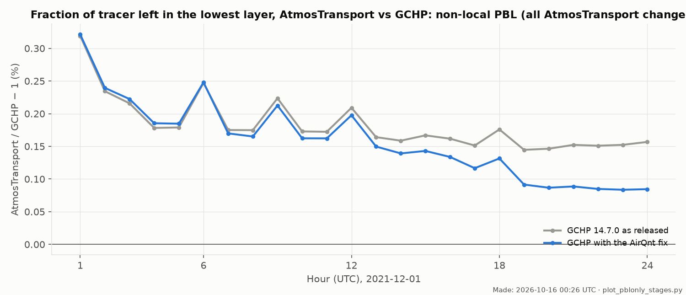
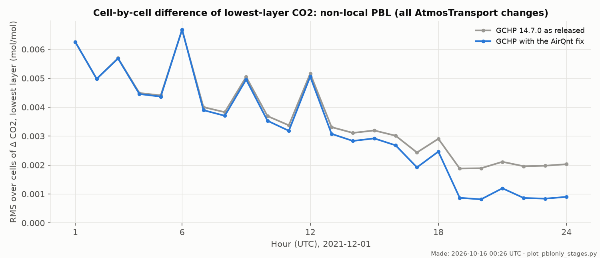
4. Non-local PBL + convection
- Why: convection is the next process; it lifts tracer from the boundary layer to the free troposphere.
- Both models use the archived GEOS convective mass fluxes (
CMFMC,DTRAIN), held over each 3-hour block. A GCHP diagnostic confirmed the same timing in both models. Both use the same updraft, detrainment and subsidence update. - Difference 1, the routine: GEOS-Chem picks its routine by met source (
input_mod.F90):- Grell–Freitas form for GEOS-IT and GEOS-FP from June 2020: no special treatment below the cloud base;
- RAS form for MERRA-2 and older GEOS-FP: all layers below the cloud base are mixed into the updraft.
cmfmc_form = "grell_freitas". - Difference 2, the timing: by default AtmosTransport runs convection once per hour, as one 3600 s step at the end of
the window. GCHP runs it every 240 s, before each PBL step. AtmosTransport setting:
[run] physics_cadence = "substep". - Result: with both changes, the cell RMS equals the PBL-only comparison (0.006 → 0.001). The fraction offset is
+0.40 % at 1 h, +0.37 % at 12 h and +0.22 % at 24 h, about 0.1–0.2 % more than PBL-only. Two known small differences
both push AtmosTransport that way:
- within each step, AtmosTransport runs PBL then convection; GCHP runs convection then PBL;
- AtmosTransport converts the mass fluxes to dry air, which makes them 0.3–2 % weaker than GCHP's moist fluxes.
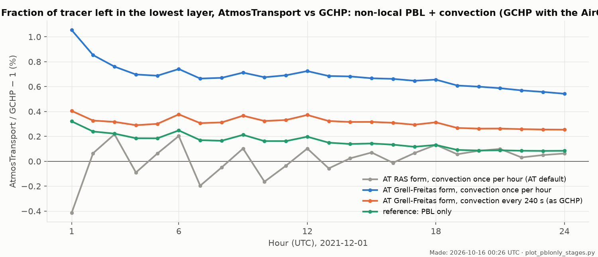
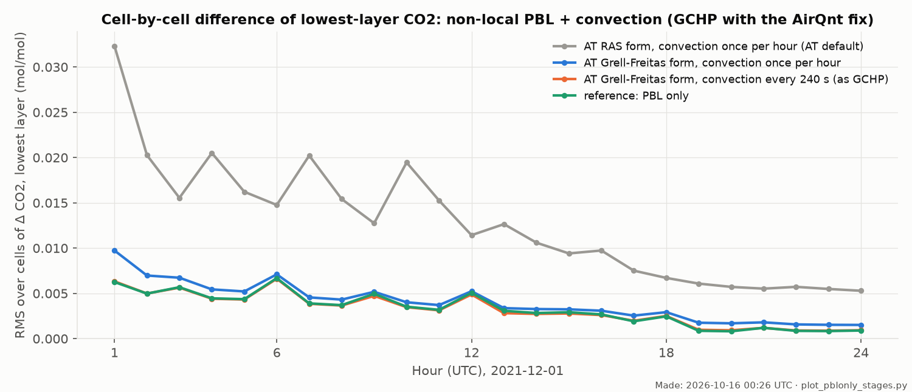
Final PBL + convection run (Grell–Freitas form, every 240 s, fixed GCHP)
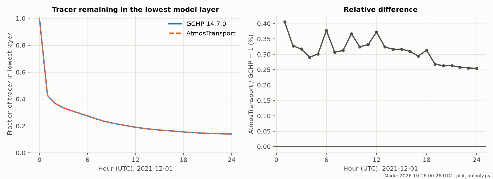
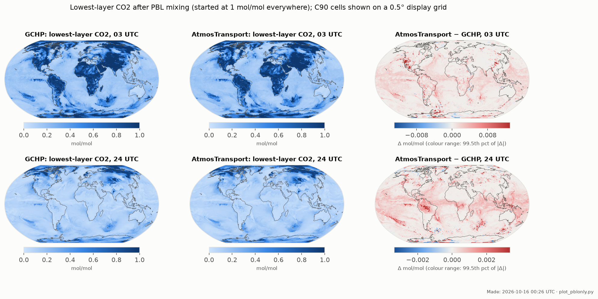
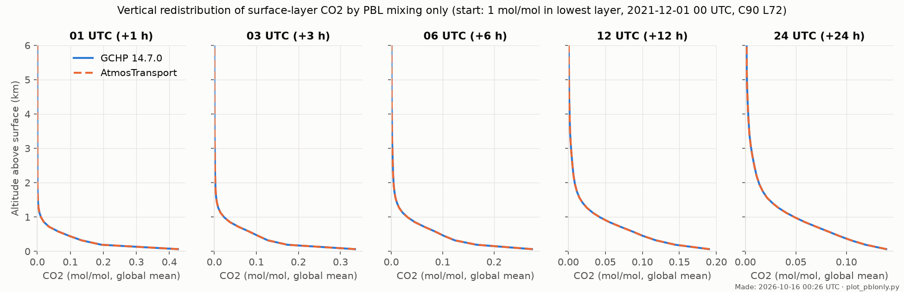
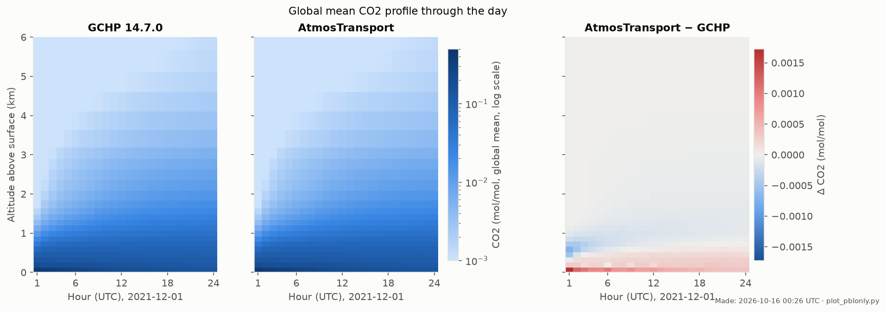
Settings that make AtmosTransport match GCHP (GEOS-IT)
# preprocessing (binary) [source] dry_mass_layers = "geoschem_hybrid" # GEOS-Chem dry air per layer vdiff_temperature_time = "window_midpoint" # PBL temperature interpolated in time [numerics] min_steps_per_window = 15 # 240 s steps max_steps_per_window = 15 [mass_fix] enable = false # GCHP has no global dry-mass pin # run [diffusion] kind = "geoschem_nonlocal_vdiff" # or "geoschem_full_pbl_mixing" (GCHP use_non_local_pbl: false) [convection] kind = "cmfmc" cmfmc_form = "grell_freitas" # GEOS-Chem's routine for GEOS-IT [run] physics_cadence = "substep" # convection every 240 s, as GCHP
The new options are on local AtmosTransport branches and are not yet on GitHub. GCHP was built with the one-line
AirQnt fix, which has not yet been reported upstream.
Numbers: null, full mixing, non-local PBL, PBL + convection (per hour, all variants).